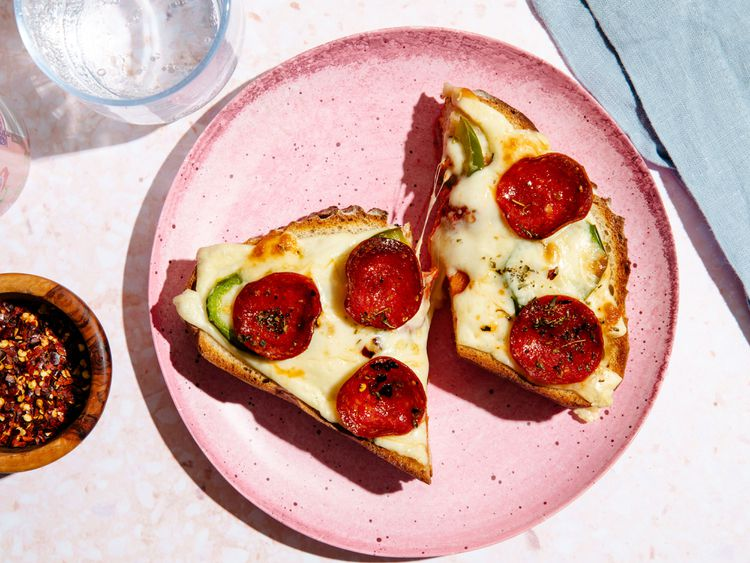

Preheat oven to 375°F. Line a sheet pan with parchment paper. Spread butter on both sides of each slice of bread and place on the prepared pan. Bake, flipping once halfway through, until bread is lightly browned on both sides, about 8 minutes. Cover the perimeter of one bread slice with half of the mozzarella cheese, leaving the middle part of the bread empty. Top with other slice of bread. Use the back of a spoon to make an indentation in the middle of the bread slices, pushing down firmly to reach the bottom slice. Add the pizza sauce to the indentation, and sprinkle half the Italian seasoning over the top. Cover with remaining ½ ounce mozzarella cheese and pepper jack, followed by jalapeño and pepperoni. Garnish with remaining Italian seasoning, crushed red pepper and black pepper. Bake until the cheese is melted and golden-brown, about 5 minutes. Slice in half and serve.
